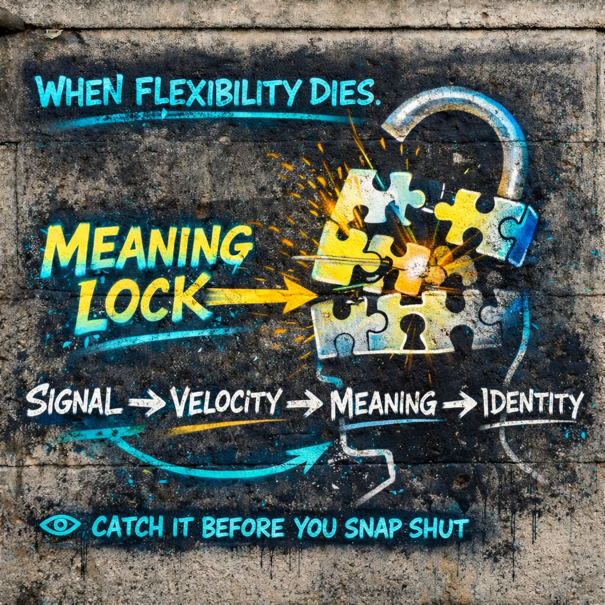

🧩 Meaning Lock
is the moment to look again.”
⚡ Spike
🧩 Snap
🎭 Become
👁️ Catch the snap…
and you stay flexible.
📍 Foundation
A signal arrives.
Something happens.
At first… it is just raw input.
But very quickly, the system asks:
And the instant that question gets answered with certainty…
⚙️ Core Definition (IPT)
Before Lock
- multiple meanings are possible
- ambiguity is alive
- response is flexible
After Lock
- interpretation stabilizes
- alternatives collapse
- identity begins aligning
📡 The Sequence
Velocity brings the hammer.
Meaning Lock is the impact point.
🧠 What Locking Feels Like
You do not experience it as “locking.”
You experience it as:
“This is clearly…”
“That’s messed up.”
“That’s amazing.”
“That’s not us.”
It feels like clarity.
But often it is:
🧩 How It Happens
- Signal arrives
Something is seen, heard, read, or implied. - Velocity spike
Emotion or familiarity accelerates interpretation. - Pattern match
The brain grabs the closest known template. - Label applied
“This is X.” - Lock
Other interpretations fade out.
🎯 Example: Slow vs Fast
Slow Path
“Hmm… what could this mean?”
- considers context
- holds uncertainty
- stays flexible
Fast Path
“I know exactly what this is.”
- no pause
- immediate emotional alignment
- identity begins attaching
Different velocity → different outcome.
🌐 Generalized Other + Meaning Lock
The internal crowd heavily influences the lock.
Instead of:
It becomes:
Meaning locks along socially safe or expected lines.
⚠️ Failure Mode: Premature Lock
When locking happens too early:
- 🧩 nuance disappears
- 🎭 identity reacts instantly
- 🧠 correction becomes difficult
- ⚔️ conflict escalates
This is where you see:
- misinterpretation wars
- outrage cascades
- “they meant this” certainty
- zero willingness to re-evaluate
🔒 Why Locks Feel Permanent
Once meaning locks:
- it reinforces itself
- new information gets filtered
- contradictions get rejected
Now it is not just meaning.
It is identity territory.
🎭 Meaning → Identity
“This is good” → “I support this”
“This is us” → “I am this”
“This is them” → “I reject that”
Meaning becomes position.
Position becomes identity.
👁️ IPT Intervention Point
IPT targets the moment just before lock completes.
That question does something subtle:
- reopens ambiguity
- slows velocity
- weakens identity attachment
🧠 Micro-Signals Of Locking
You can catch meaning lock by noticing:
- instant labeling
- emotional certainty without analysis
- dismissal of alternatives
- urge to defend immediately
- “case closed” feeling
That’s a lock engaging.
🔓 Unlocking Without Chaos
IPT does not remove meaning.
It loosens it.
Instead of:
“This is what it is.”
You get:
“This is one interpretation.”
That small shift:
- preserves function
- restores flexibility
- delays identity capture
⚖️ Healthy vs Rigid Lock
Healthy
- provisional meaning
- open to revision
- context-aware
Rigid
- instant certainty
- emotionally defended
- resistant to update
🔥 IPT Edge
Mead shows:
IPT adds:
👁️ Final Distillation
and identity begins forming around it.
is the moment to look again.
⚡ Spike
🧩 Snap
🎭 Become
👁️ Catch the snap…
and you stay flexible.